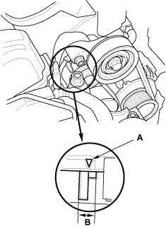
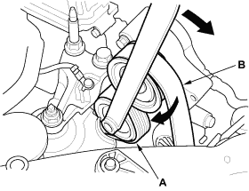

Check that the auto-tensioner indicator (A) is within the standard range (B) as shown. If it is out of the standard range, replace the drive belt (see page 4-25).

- Move the auto-tensioner (A) to relieve tension from the drive belt (B), and remove the drive belt.

- Install the new belt in the reverse order of removal.